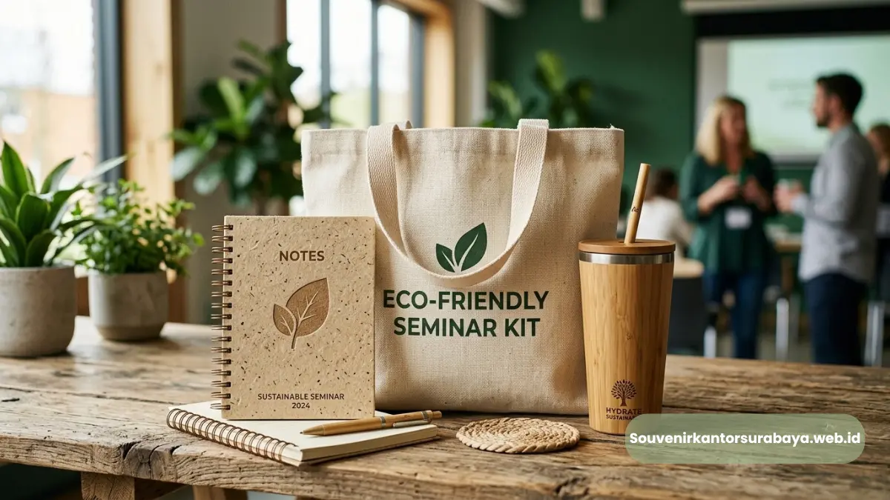
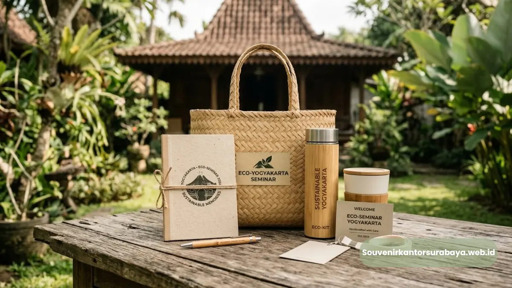
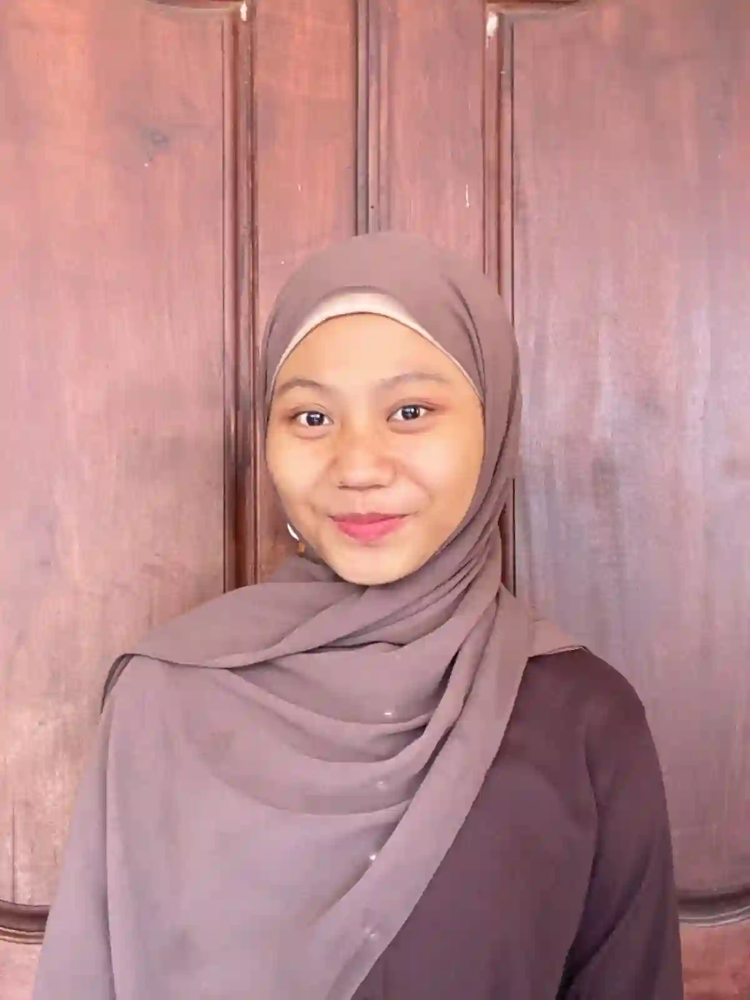
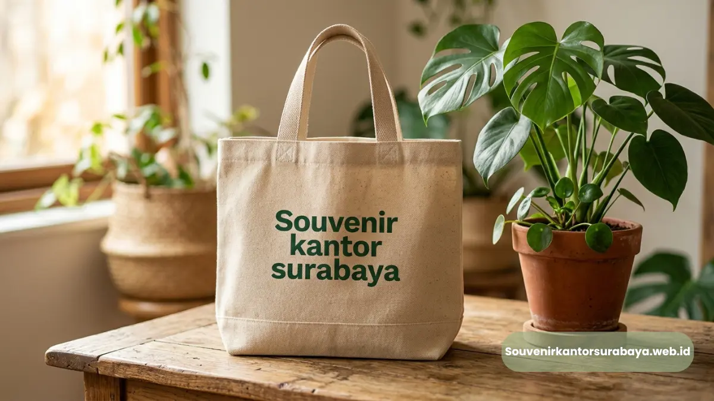
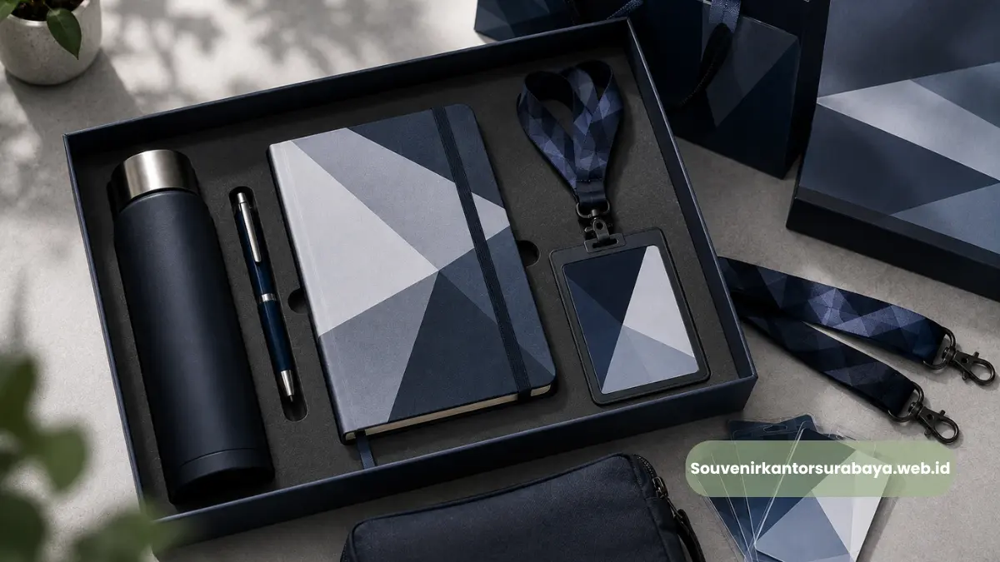
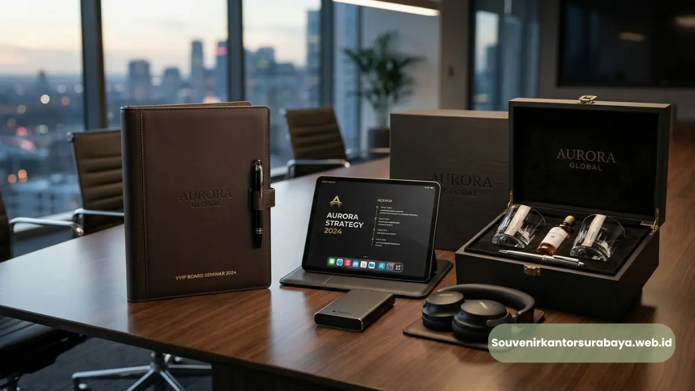

Paket Seminar Kit Ramah Lingkungan untuk Kampanye Keberlanjutan Korporat
Pilihan seminar kit ramah lingkungan memfasilitasi implementasi program keberlanjutan institusi melalui penyediaan cinderamata kantor yang dapat diperbarui secara alami dan bertanggung jawab.
- Mengurangi penggunaan bahan plastik sekali pakai pada pelaksanaan acara korporasi berskala besar.
- Pemanfaatan serat tanaman alami seperti bambu, jerami gandum, dan kapas organik mentah.
- Kemasan luar terbuat dari material kertas daur ulang berlabel sertifikasi ramah lingkungan.
- Proses cetak menggunakan formula tinta berbasis kedelai yang aman bagi kondisi ekosistem tanah.
Berdasarkan Eco-Corporate Sustainability Survey periode 2025, sebanyak 76% audiens institusi menyatakan lebih menghargai cinderamata yang menggunakan material ramah lingkungan tersertifikasi resmi.
Pendekatan pengadaan hijau terbukti secara empiris mampu menaikkan nilai kepedulian sosial perusahaan di mata publik pemerhati lingkungan.
Varian Souvenir Daur Ulang untuk Event Bisnis Berkelanjutan
Produk seminar kit ramah lingkungan berbahan baku daur ulang mengkombinasikan daya tahan mekanis produk yang baik dengan kepedulian nyata terhadap kelestarian alam sekitar.
Notebook Daur Ulang dan Pulpen Jerami Gandum
Buku catatan berkonsep ramah lingkungan memanfaatkan lembaran kertas daur ulang pascakonsumsi seberat 80 gram yang diproses secara mekanis tanpa zat pemutih klorin.
Sampul luarnya memanfaatkan kertas karton daur ulang dengan ketebalan dua milimeter yang sangat kokoh untuk menopang tulisan saat berada di lapangan.
Setiap lembaran dijilid menggunakan pilinan kawat baja lentur yang dapat dipisahkan secara mudah saat masa daur ulang berikutnya tiba.
Pena fungsional yang menyertainya dibuat dari komposit serat jerami gandum alami yang dicampur dengan resin termoplastik ramah lingkungan dalam proporsi berimbang.
Bentuk laras penanya dirancang secara ergonomis guna mengurangi kelelahan otot jemari tangan selama sesi pencatatan materi seminar yang berlangsung maraton.
Identitas jenama perusahaan diaplikasikan menggunakan teknik cetak sablon satu warna berbahan dasar pewarna nabati yang tidak meninggalkan residu beracun bagi lingkungan.
Tote Bag Kanvas Organik Bordir Komputer
Tas jinjing berkapasitas tampung lapang ini dijahit dari kain kanvas katun organik murni berbobot sepuluh ons tanpa melalui proses pemutihan bahan kimia sintetis.
Jahitan pada sambungan tali bahu diperkuat dengan metode jahitan silang berkali-kali agar mampu menahan beban bawaan seminar kit hingga seberat delapan kilogram.
Dimensinya yang proporsional memudahkan peserta dalam menyimpan dokumen kerja, botol air minum, serta peralatan komputasi portabel secara teratur.
Penempatan logo dan pesan kampanye keberlanjutan diaplikasikan menggunakan mesin bordir komputer berkecepatan tinggi dengan benang tenun poliester daur ulang yang sangat kuat.
Pola bordir menghasilkan dimensi visual yang tegas, tidak mudah memudar meski dicuci berkali-kali, serta terbebas dari ancaman retakan sablon konvensional.
Produk tas ini dapat digunakan kembali oleh peserta dalam aktivitas berbelanja harian guna meminimalisasi kantong plastik belanjaan komersial.
Baca Juga

Wadah Minuman Berkelanjutan untuk Mengurangi Sampah Plastik Kantor
Penyediaan wadah minuman berdaya pakai berulang kali dalam seminar kit ramah lingkungan menjadi langkah konkret mengurangi tumpukan sampah plastik air mineral kemasan.
Tumbler Bambu Stainless Steel dengan Grafir Presisi
Botol minum berinsulasi vakum ini mengusung lapisan terluar berbahan serat bambu alami yang diamplas halus serta dipoles menggunakan minyak nabati pelindung jamur.
Di bagian dalam, terdapat wadah penyimpanan cairan berbahan baja nirkarat kelas makanan tipe 304 yang tahan terhadap sifat asam minuman jus.
Struktur termal canggih ini mampu mempertahankan stabilitas temperatur air panas selama delapan jam dan air dingin selama dua belas jam berturut-turut.
Penerapan logo organisasi pada cangkang bambu memanfaatkan teknik pengetsaan sinar laser karbon dioksida yang menghasilkan tampilan kontras berwarna cokelat tua alami.
Setiap pola serat bambu yang unik memberikan nilai otentisitas eksklusif pada masing-masing botol souvenir yang diterima oleh peserta pelatihan korporasi.
Tutup botol dilengkapi cincin segel silikon murni guna mencegah kebocoran cairan saat botol disimpan secara horizontal di dalam tas ransel.
Baca Juga
Solusi Seminar Kit Berkelanjutan Melayani Pemesanan di Yogyakarta
Dukung terwujudnya operasional bisnis yang bertanggung jawab terhadap bumi dengan memesan paket seminar kit ramah lingkungan berkualitas tinggi di souvenir kantor surabaya.
Kami melayani pemesanan souvenir di Yogyakarta dengan opsi pemilihan material terverifikasi ramah lingkungan serta layanan pembuatan sampel sebelum tahap produksi massal.
Hubungi divisi pengadaan souvenir kantor surabaya sekarang untuk mendapatkan penawaran harga paket keberlanjutan yang kompetitif bagi agenda institusi Anda.

Hawa Nadira
Tim penulis CorporateGifts ID berfokus pada strategi souvenir kantor, merchandise korporat, dan inovasi brand untuk klien B2B.
Keahlian: Branding perusahaan, produksi souvenir, paket event, desain materi promosi.
Artikel Terkait

Souvenir Kantor Ramah Lingkungan CSR
Inspirasi cinderamata ramah lingkungan untuk menyukseskan program keberlanjutan korporasi.
Baca Selengkapnya
Paket Seminar Kit Lengkap Surabaya
Inspirasi paket seminar kit fungsional untuk menunjang aktivitas peserta acara.
Baca Selengkapnya
Paket Seminar Kit Eksklusif Direksi
Paket seminar kit eksklusif untuk rapat kerja direksi dan tamu kehormatan korporasi.
Baca Selengkapnya